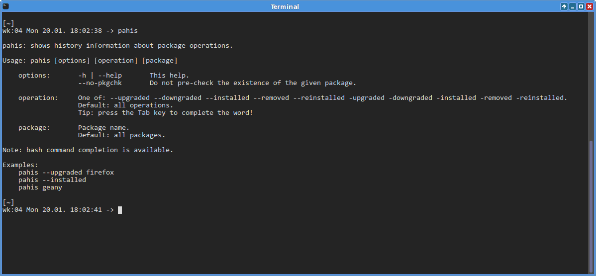
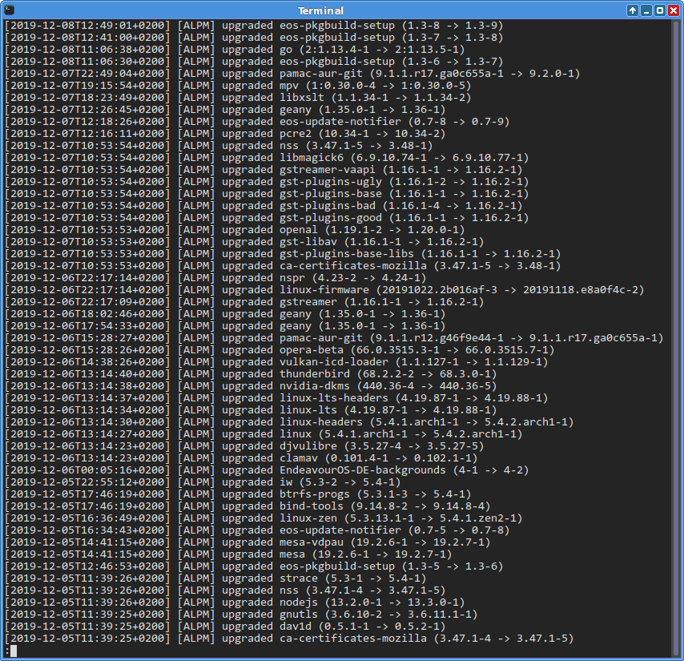
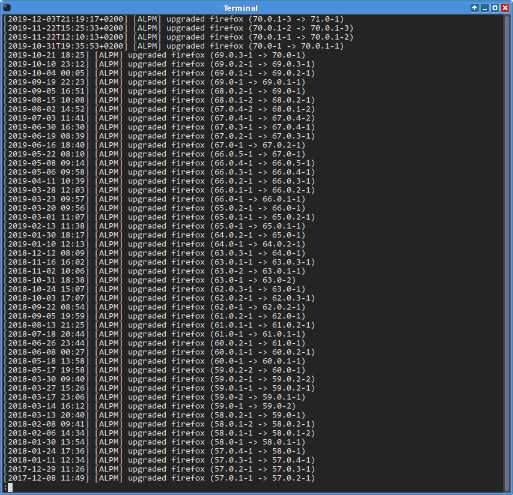

Show pacman history for all or selected packages.
Run command
pahis --help
about how to use it.
Note: you can use bash completion (tab) to
complete a partial words and options!
Examples:
pahis --upgraded # shows upgrades of all packages pahis --upgraded firefox # shows when firefox was upgraded pahis geany # shows all operations on geany pahis --removed # shows removals of packages pahis -installed # shows installs of packages pahis --Running # shows pacman commands used
pahis

pahis --upgraded

pahis --upgraded firefox
